- AQS 万字图文全面解析.md.html
- Docker 镜像构建原理及源码分析.md.html
- ElasticSearch 小白从入门到精通.md.html
- JVM CPU Profiler技术原理及源码深度解析.md.html
- JVM 垃圾收集器.md.html
- JVM 面试的 30 个知识点.md.html
- Java IO 体系、线程模型大总结.md.html
- Java NIO浅析.md.html
- Java 面试题集锦（网络篇）.md.html
- Java-直接内存 DirectMemory 详解.md.html
- Java中9种常见的CMS GC问题分析与解决（上）.md.html
- Java中9种常见的CMS GC问题分析与解决（下）.md.html
- Java中的SPI.md.html
- Java中的ThreadLocal.md.html
- Java线程池实现原理及其在美团业务中的实践.md.html
- Java魔法类：Unsafe应用解析.md.html
- Kafka 源码阅读笔记.md.html
- Kafka、ActiveMQ、RabbitMQ、RocketMQ 区别以及高可用原理.md.html
- MySQL · 引擎特性 · InnoDB Buffer Pool.md.html
- MySQL · 引擎特性 · InnoDB IO子系统.md.html
- MySQL · 引擎特性 · InnoDB 事务系统.md.html
- MySQL · 引擎特性 · InnoDB 同步机制.md.html
- MySQL · 引擎特性 · InnoDB 数据页解析.md.html
- MySQL · 引擎特性 · InnoDB崩溃恢复.md.html
- MySQL · 引擎特性 · 临时表那些事儿.md.html
- MySQL 主从复制 半同步复制.md.html
- MySQL 主从复制 基于GTID复制.md.html
- MySQL 主从复制.md.html
- MySQL 事务日志(redo log和undo log).md.html
- MySQL 亿级别数据迁移实战代码分享.md.html
- MySQL 从一条数据说起-InnoDB行存储数据结构.md.html
- MySQL 地基基础：事务和锁的面纱.md.html
- MySQL 地基基础：数据字典.md.html
- MySQL 地基基础：数据库字符集.md.html
- MySQL 性能优化：碎片整理.md.html
- MySQL 故障诊断：一个 ALTER TALBE 执行了很久，你慌不慌？.md.html
- MySQL 故障诊断：如何在日志中轻松定位大事务.md.html
- MySQL 故障诊断：教你快速定位加锁的 SQL.md.html
- MySQL 日志详解.md.html
- MySQL 的半同步是什么？.md.html
- MySQL中的事务和MVCC.md.html
- MySQL事务_事务隔离级别详解.md.html
- MySQL优化：优化 select count().md.html
- MySQL共享锁、排他锁、悲观锁、乐观锁.md.html
- MySQL的MVCC（多版本并发控制）.md.html
- QingStor 对象存储架构设计及最佳实践.md.html
- RocketMQ 面试题集锦.md.html
- SnowFlake 雪花算法生成分布式 ID.md.html
- Spring Boot 2.x 结合 k8s 实现分布式微服务架构.md.html
- Spring Boot 教程：如何开发一个 starter.md.html
- Spring MVC 原理.md.html
- Spring MyBatis和Spring整合的奥秘.md.html
- Spring 帮助你更好的理解Spring循环依赖.md.html
- Spring 循环依赖及解决方式.md.html
- Spring中眼花缭乱的BeanDefinition.md.html
- Vert.x 基础入门.md.html
- eBay 的 Elasticsearch 性能调优实践.md.html
- 不可不说的Java“锁”事.md.html
- 互联网并发限流实战.md.html
- 从ReentrantLock的实现看AQS的原理及应用.md.html
- 从SpringCloud开始，聊微服务架构.md.html
- 全面了解 JDK 线程池实现原理.md.html
- 分布式一致性理论与算法.md.html
- 分布式一致性算法 Raft.md.html
- 分布式唯一 ID 解析.md.html
- 分布式链路追踪：集群管理设计.md.html
- 动态代理种类及原理，你知道多少？.md.html
- 响应式架构与 RxJava 在有赞零售的实践.md.html
- 大数据算法——布隆过滤器.md.html
- 如何优雅地记录操作日志？.md.html
- 如何设计一个亿级消息量的 IM 系统.md.html
- 异步网络模型.md.html
- 当我们在讨论CQRS时，我们在讨论些神马？.md.html
- 彻底理解 MySQL 的索引机制.md.html
- 最全的 116 道 Redis 面试题解答.md.html
- 有赞权限系统(SAM).md.html
- 有赞零售中台建设方法的探索与实践.md.html
- 服务注册与发现原理剖析（Eureka、Zookeeper、Nacos）.md.html
- 深入浅出Cache.md.html
- 深入理解 MySQL 底层实现.md.html
- 漫画讲解 git rebase VS git merge.md.html
- 生成浏览器唯一稳定 ID 的探索.md.html
- 缓存 如何保证缓存与数据库的双写一致性？.md.html
- 网易严选怎么做全链路监控的？.md.html
- 美团万亿级 KV 存储架构与实践.md.html
- 美团点评Kubernetes集群管理实践.md.html
- 美团百亿规模API网关服务Shepherd的设计与实现.md.html
- 解读《阿里巴巴 Java 开发手册》背后的思考.md.html
- 认识 MySQL 和 Redis 的数据一致性问题.md.html
- 进阶：Dockerfile 高阶使用指南及镜像优化.md.html
- 铁总在用的高性能分布式缓存计算框架 Geode.md.html
- 阿里云PolarDB及其共享存储PolarFS技术实现分析（上）.md.html
- 阿里云PolarDB及其共享存储PolarFS技术实现分析（下）.md.html
- 面试最常被问的 Java 后端题.md.html
- 领域驱动设计在互联网业务开发中的实践.md.html
- 领域驱动设计的菱形对称架构.md.html
- 高效构建 Docker 镜像的最佳实践.md.html
美团百亿规模API网关服务Shepherd的设计与实现
在微服务架构下，服务拆分会让API的规模成倍增长，使用API网关来管理API逐渐成为一种趋势。美团统一API网关服务Shepherd就是在这种背景下应运而生，适用于美团业务且完全自研，用于替换传统的Web层网关应用，业务研发人员通过配置的方式即可对外开放功能和数据。本文将介绍美团统一API网关诞生的背景、关键的技术设计和实现，以及API网关未来的规划，希望能给大家带来一些帮助或者启发。
一、背景介绍
1.1 API网关是什么？
API网关是随着微服务（Microservice）概念兴起的一种架构模式。原本一个庞大的单体应用（All in one）业务系统被拆分成许多微服务（Microservice）系统进行独立的维护和部署，服务拆分带来的变化是API的规模成倍增长，API的管理难度也在日益增加，使用API网关发布和管理API逐渐成为一种趋势。一般来说，API网关是运行于外部请求与内部服务之间的一个流量入口，实现对外部请求的协议转换、鉴权、流控、参数校验、监控等通用功能。
1.2 为什么要做Shepherd API网关？
在没有Shepherd API网关之前，美团业务研发人员如果要将内部服务输出为对外的HTTP API接口。通常要搭建一个Web应用，用于完成基础的鉴权、限流、监控日志、参数校验、协议转换等工作，同时需要维护代码逻辑、基础组件的升级，研发效率相对比较低。此外，每个Web应用都需要维护机器、配置、数据库等，资源利用率也非常差。
美团内部一些业务线苦于没有现成的解决方案，根据自身业务特点，研发了业务相关的API网关。放眼业界，亚马逊、阿里巴巴、腾讯等公司也都有成熟的API网关解决方案。
因此，Shepherd API网关项目正式立项，我们的目标是为美团提供高性能、高可用、可扩展的统一API网关解决方案，让业务研发人员通过配置的方式即可对外开放功能和数据。
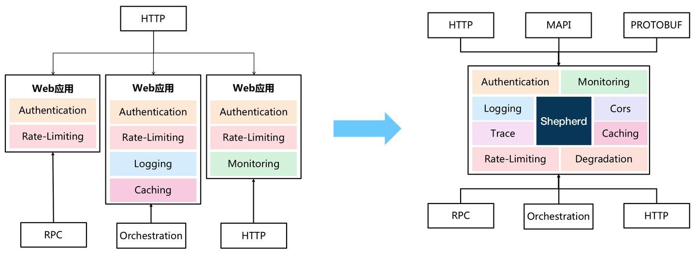
1.3 使用Shepherd带来的收益是什么？
从业务研发人员的角度来看，接入Shepherd API网关，能带来哪些收益呢？简而言之包括三个方面。
-
提升研发效率
-
- 业务研发人员只需要通过配置的方式即可快速开放服务接口。
- Shepherd统一提供鉴权、限流、熔断等非业务基础能力。
- Shepherd支持业务研发人员通过开发自定义组件的方式扩展API网关能力。
-
降低沟通成本
-
- 业务研发人员配置好API，可以自动生成API的前后端交互文档和客户端SDK，方便前后端开发人员进行交互、联调。
-
提升资源利用率
-
- 基于Serverless的架构思想，实现API全托管，业务研发人员无需关心机器资源问题。
二、技术设计与实现
2.1 整体架构
我们先来看看Shepherd API网关的整体架构，如下图所示：
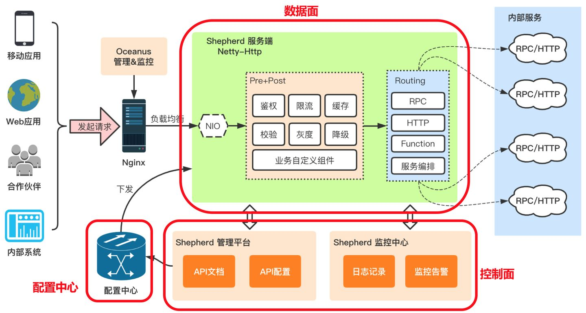
Shepherd API网关的控制面由Shepherd管理平台和Shepherd监控中心组成。管理平台主要完成API的全生命周期管理以及配置下发的工作，监控中心完成API请求监控数据的收集和业务告警功能。
Shepherd API网关的配置中心主要完成控制面与数据面的信息交互，通过美团统一配置服务Lion来实现。
Shepherd API网关的数据面也就是Shepherd 服务端。一次完整的API请求，可能是从移动应用、Web应用，合作伙伴或内部系统发起，经过Nginx负载均衡系统后，到达服务端。服务端集成了一系列的基础功能组件和业务自定义组件，通过泛化调用请求后端RPC服务、HTTP服务、函数服务或服务编排服务，最后返回响应结果。
下面我们将针对这三个主要模块做详细的介绍。
2.1.1 控制面
使用API网关的控制面，业务研发人员可以轻松的完成API的全生命周期管理，如下图所示：
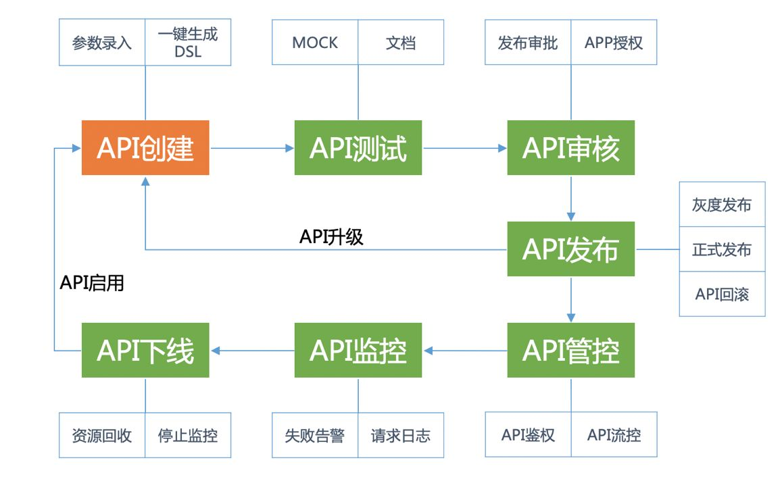
业务研发人员从创建API开始，完成参数录入、DSL脚本生成；接着可以通过文档和MOCK功能进行API测试；API测试完成后，为了保证上线稳定性，Shepherd管理平台提供了发布审批、灰度上线、版本回滚等一系列安全保证措施；API运行期间会监控API的调用失败情况、记录请求日志，一旦发现异常及时发出告警；最后，对于不再使用的API进行下线操作后，会回收API所占用的各类资源并等待重新启用。
整个生命周期，全部通过配置化、流程化的方式，由业务研发人员全自助管理，上手时间基本在10分钟以内，极大地提升了研发效率。
2.1.2 配置中心
API网关的配置中心存放API的相关配置信息——使用自定义的DSL（Domain-Specific Language，领域专用语言）来描述，用于向API网关的数据面下发API的路由、规则、组件等配置变更。
配置中心的设计上使用统一配置管理服务Lion和本地缓存结合的方式，实现动态配置，不停机发布。API的配置如下图所示：
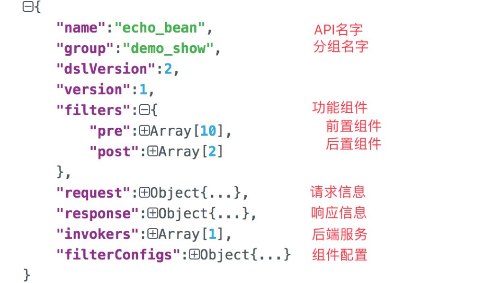
API配置的详细说明：
- Name、Group：名字、所属分组。
- Request：请求的域名、路径、参数等信息。
- Response：响应的结果组装、异常处理、Header、Cookies信息。
- Filters、FilterConfigs：API使用到的功能组件和配置信息。
- Invokers：后端服务(RPC/HTTP/Function)的请求规则和编排信息。
2.1.3 数据面
API路由
API网关的数据面在感知到API配置后，会在内存中建立请求路径与API配置的路由信息。通常HTTP请求路径上，会包含一些路径变量，考虑到性能问题，Shepherd没有采用正则匹配的方式，而是设计了两种数据结构来存储。如下图所示：
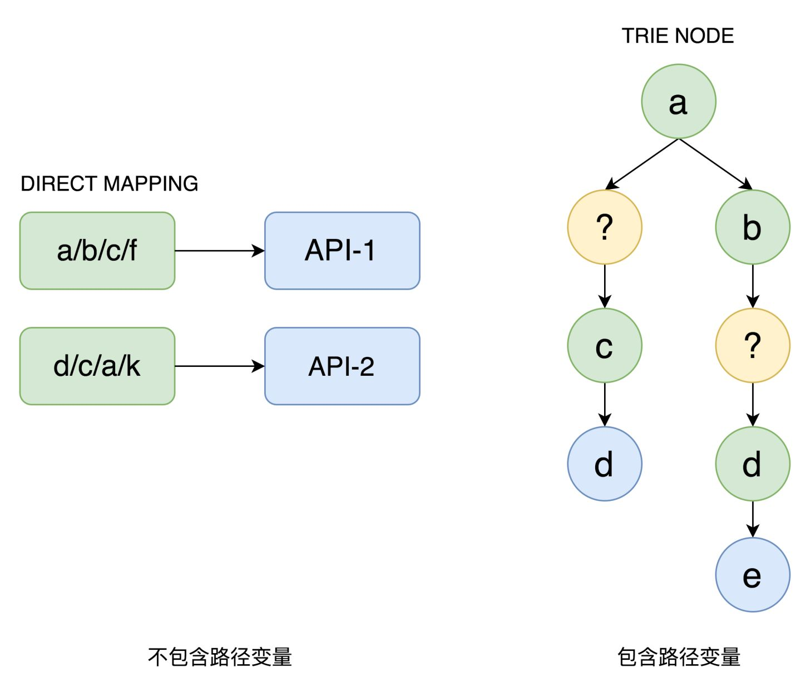
一种是不包含路径变量的直接映射的MAP结构。其中，Key就是完整的域名和路径信息，Value是具体的API配置。
另外一种是包含路径变量的前缀树数据结构。通过前缀匹配的方式，先进行叶子节点精确查找，并将查找节点入栈处理，如果匹配不上，则将栈顶节点出栈，再将同级的变量节点入栈，如果仍然找不到，则继续回溯，直到找到（或没找到）路径节点并退出。
功能组件
当请求流量命中API请求路径进入服务端，具体处理逻辑由DSL中配置的一系列功能组件完成。网关提供了丰富的功能组件集成，包括链路追踪、实时监控、访问日志、参数校验、鉴权、限流、熔断降级、灰度分流等，如下图所示：
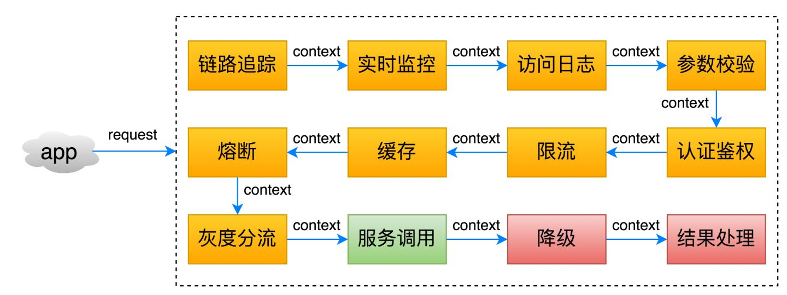
协议转换&服务调用
API调用的最后一步，就是协议转换以及服务调用了。网关需要完成的工作包括：获取HTTP请求参数、Context本地参数，拼装后端服务参数，完成HTTP协议到后端服务的协议转换，调用后端服务获取响应结果并转换为HTTP响应结果。
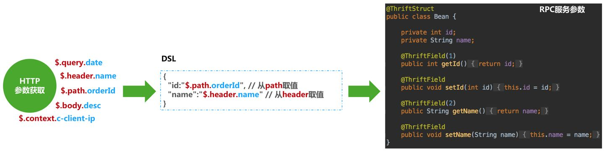
上图以调用后端RPC服务为例，通过JsonPath表达式获取HTTP请求不同部位的参数值，替换RPC请求参数相应部位的Value，生成服务参数DSL，最后借助RPC泛化调用完成本次服务调用。
2.2 高可用设计
Shepherd API网关作为接入层的基础组件，高可用性一直是业务研发人员非常关心的部分。接下来。我们就来探索一下Shepherd在高可用设计方面的实践。
2.2.1 排除性能隐患
一个高可用的系统，预防故障的发生，首先要排除性能隐患，保证高性能。
Shepherd对API请求做了全异步化处理，请求通过Jetty IO线程异步提交到业务处理线程池，调用后端服务使用RPC或HTTP框架的异步方式，释放了由于网络等待引起的线程占用，使线程数不再成为网关的瓶颈。下图是使用Jetty容器时，服务端的请求线程处理逻辑：
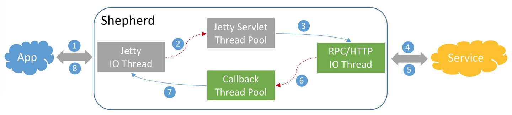
我们通过域名压测网关单机的端到端QPS，发现QPS在超过2000时，会出现很多超时错误，而网关的服务端负载与性能却非常富余。调研发现，公司内其他的Web应用都存在这个问题，与Oceanus团队进行联合排查后，发现是Nginx与Web应用之间的长连接功能没有打开，且无法配置。Oceanus团队经过紧急排期，研发并上线长连接功能后，Shepherd端到端的QPS成功提升到了10000以上。
另外，我们对Shepherd服务端进行了API请求预热的优化，使得网关启动时能立刻达到最佳性能，减少毛刺的发生。然后，通过压测时的CPU热点排查，将性能瓶颈找出，减少主链路上的本地日志打印，对请求日志进行异步化、远程化改造。Shepherd端到端的QPS再次提升30%以上。
在Shepherd服务上线稳定运行一年以后，我们再次对性能进行优化，并且做了一次网络框架升级，将Jetty容器全面替换为Netty网络框架，性能提升10%以上，Shepherd端到端的QPS成功提升到15000以上。下图是使用Netty框架时，服务端的请求线程处理逻辑：
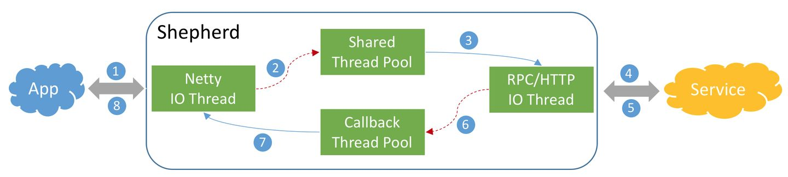
2.2.2 服务隔离
集群隔离
借鉴公司缓存、任务调度等成熟组件的经验，Shepherd在设计之初，就考虑了按业务线维度进行集群隔离，也支持重要业务独立部署。如下图所示：
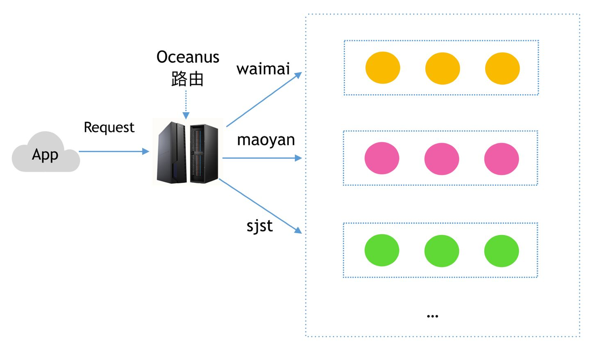
请求隔离
服务节点维度，Shepherd支持请求的快慢线程池隔离。快慢线程池隔离主要用于一些使用了同步阻塞组件的API，例如SSO鉴权、自定义鉴权等，可能导致长时间阻塞共享业务线程池。
快慢隔离的原理是统计API请求的处理时间，将请求处理耗时较长，超过容忍阈值的API请求隔离到慢线程池，避免影响其他正常API的调用。
除此之外，Shepherd也支持业务研发人员配置自定义线程池进行隔离。具体的线程隔离模型如下图所示：
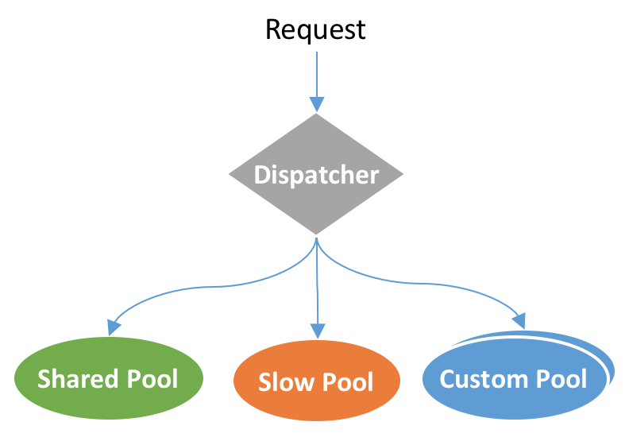
2.2.3 稳定性保障
Shepherd提供了一些常规的稳定性保障手段，来保证自身和后端服务的可用性。如下图所示：
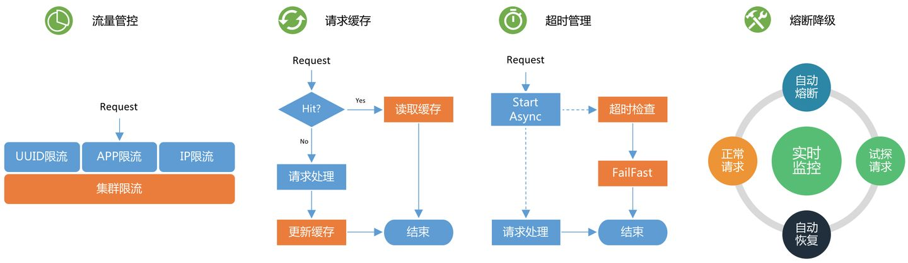
- 流量管控：从用户自定义UUID限流、App限流、IP限流、集群限流等多个维度提供流量保护。
- 请求缓存：对于一些幂等的、查询频繁的、数据及时性不敏感的请求，业务研发人员可开启请求缓存功能。
- 超时管理：每个API都设置了处理超时时间，对于超时的请求，进行快速失败的处理，避免资源占用。
- 熔断降级：支持熔断降级功能，实时监控请求的统计信息，达到配置的失败阈值后，自动熔断，返回默认值。
2.2.4 请求安全
请求安全是API网关非常重要的能力，Shepherd集成了丰富的安全相关的系统组件，包括有基础的请求签名、SSO单点登录、基于SSO鉴权的UAC/UPM访问控制、用户鉴权Passport、商家鉴权EPassport、商家权益鉴权、反爬等等。业务研发人员只需要简单配置，即可使用。
2.2.5 可灰度
API网关作为请求入口，往往肩负着请求流量灰度验证的重任。
灰度场景
Shepherd在灰度能力上，支持灰度API自身逻辑，也支持灰度下游服务，也可以同时灰度API自身逻辑和下游服务。如下图所示：
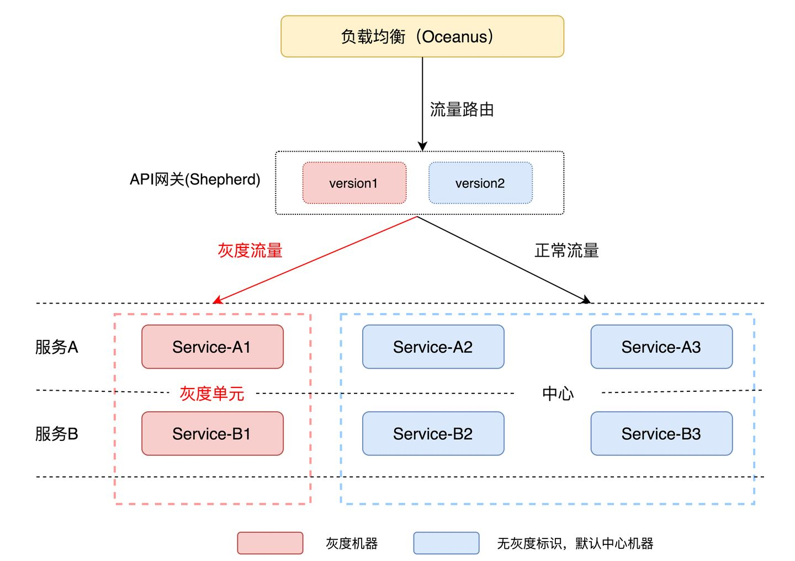
灰度API自身逻辑时，通过将流量分流到不同的API版本实现灰度能力；灰度下游服务时，通过给流量打标，分流到指定的下游灰度单元中。
灰度策略
Shepherd支持丰富的灰度策略，可以按照比例数灰度，也可以按照特定条件灰度。
2.2.6 监控告警
立体化监控
Shepherd提供360度的立体化监控，从业务指标、机器指标、JVM指标提供7x24小时的专业守护，如下表：
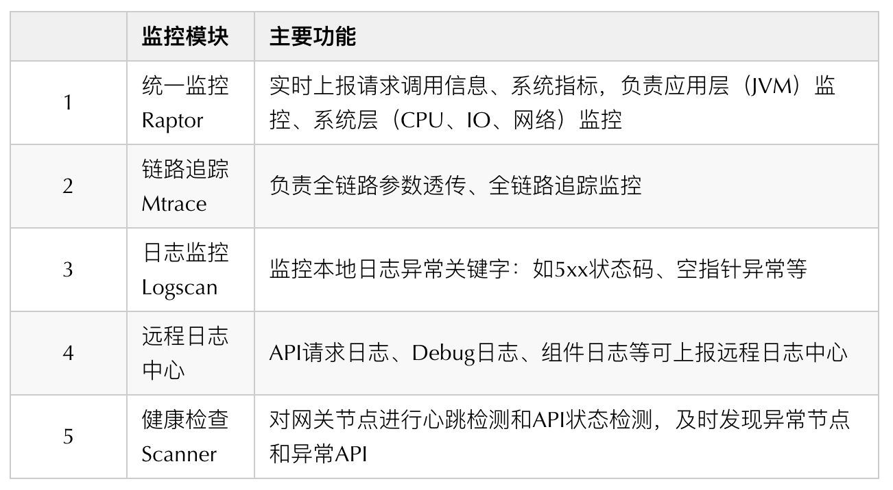
多维度告警
有了全面的监控体系，自然少不了配套的告警机制，主要的告警能力包括：

2.2.7 故障自愈
Shepherd服务端接入了弹性伸缩模块，可根据CPU等指标进行快速扩容、缩容。除此之外，还支持快速摘除问题节点，以及更细粒度的问题组件摘除。
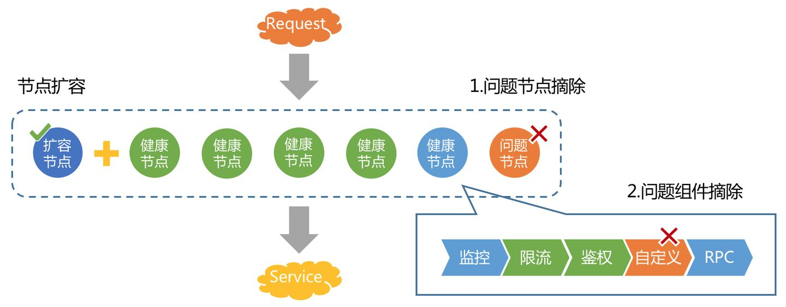
2.2.8 可迁移
对于一些已经在对外提供API的Web服务，业务研发人员为了减少运维成本和后续的研发提效，考虑将其迁移到Shepherd API网关。
对于一些非核心API，可以考虑使用Oceanus的灰度发布功能直接迁移。但是对于一些核心API，上面的灰度发布功能是机器级别的，粒度较大，不够灵活，不能很好的支持灰度验证过程。
解决方案
Shepherd为业务研发人员提供了一个灰度SDK，接入SDK的Web服务，可在识别灰度流量后转发到Shepherd API网关进行验证。
灰度哪些API、灰度百分比可以在Shepherd管理端动态调节，实时生效，业务研发人员还可以通过SPI的方式自定义灰度策略。灰度验证通过后，再把API迁移到Shepherd API网关，保障迁移过程的稳定性。
灰度过程
灰度前：在Shepherd管理平台创建API分组，域名配置为目前使用的域名。在Oceanus上，原域名规则不变。
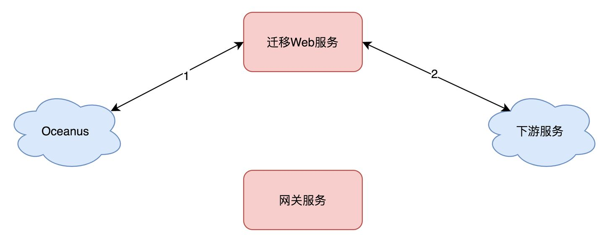
灰度中：在Shepherd管理平台开启灰度功能，灰度SDK将灰度流量转发到网关服务，进行验证。
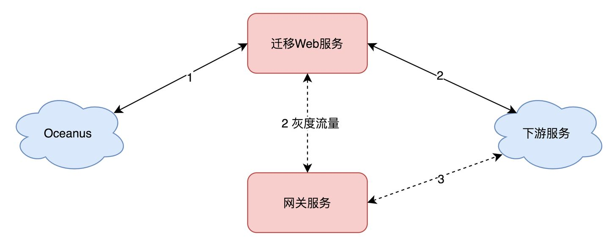
灰度后：通过灰度流量验证Shepherd上的API配置符合预期后再迁移。
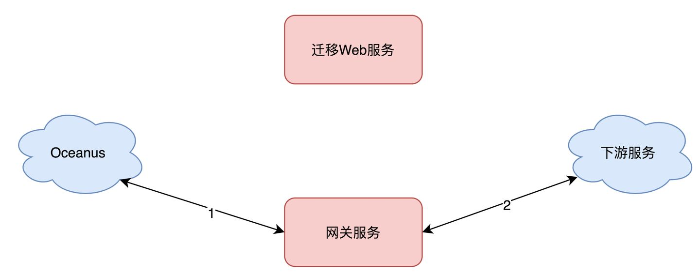
2.3 易用性设计
Shepherd API网关的功能强大且复杂，易用性对业务研发人员来说至关重要，我们着重来看下自动生成DSL、API操作提效的解决方案。
2.3.1 自动生成DSL
业务研发人员在实际使用网关管理平台时，我们尽量通过图形化的页面配置来减轻DSL的编写负担。但服务参数转换的DSL配置，仍然需要业务研发人员手工编写。一般来说，生成服务参数DSL的流程是：
- 引入服务的接口包依赖。
- 拿到服务参数类定义。
- 编写Testcase生成JSON模板。
- 填写参数映射规则。
- 最后手工录入管理平台，发布API。
整个过程非常繁琐，且容易出错。如果需要录入的API多达几十上百个，全部由业务研发人员手工录入的效率是非常低下的。
解决方案
那么能不能将服务参数DSL的生成过程给自动化呢？ 答案是可以的，业务RD只需在网关录入API文档信息，然后录入服务的Appkey、服务名、方法名信息，Shepherd管理端会从最新发布的服务框架控制台获取到服务参数的JSON Schema信息，JSON Schema定义了服务参数的类型和结构信息，管理端可根据这些信息，自动生成服务参数的JSON Mock数据。结合API文档的信息，自动替换参数名相同的Value值。 这套DSL自动生成方案，使用过程中对业务透明、标准化，业务方只需升级最新版本服务框架即可使用，极大提升研发效率，目前受到业务研发人员的广泛好评。
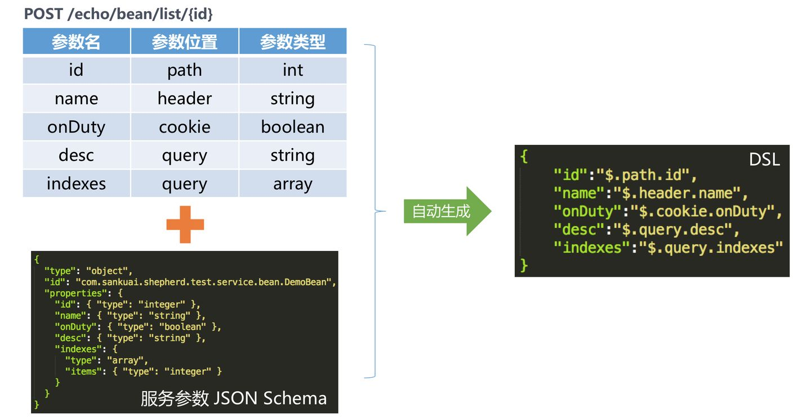
2.3.2 API操作提效
快速创建API
API网关的核心能力是建立在API配置的基础上的，但提供强大功能的同时带来了较高的复杂性，不少业务研发人员吐槽API配置太繁琐，学习成本高。快速创建API的功能应运而生，业务研发人员只需要提供少量的信息就可以创建API。快速创建API的功能当前分为4种类型（后端RPC服务API、后端HTTP服务API、SSO CallBack API、Nest API），未来会根据业务应用场景的不同，提供更多的快速创建API类型。
批量操作
业务研发人员在API网关上，需要管理非常多的业务分组，每个业务分组，最多可以有200个API配置，多个API可能有很多相同的配置，如组件配置，错误码配置和跨域配置的。每个API对于相同的配置都要配置一遍，操作重复度很高。因此Shepherd支持批量操作多个API：勾选多个API后，通过【批量操作】功能可一次性完成多个API配置更新，降低业务重复配置的操作成本。
API导入导出
Shepherd提供在不同研发环境相互导入导出API的能力，业务研发人员在线下测试完成后，只需要使用API导入导出功能，即可将配置导出到线上生产环境，避免重复配置。
2.4 可扩展性设计
一个设计良好的基础组件，除了能提供强大的基础能力，还需要有良好的扩展能力。 Shepherd的可扩展性主要体现在：支持自定义组件、服务编排的能力。
2.4.1 自定义组件
Shepherd提供了丰富的系统组件完成鉴权、限流、监控能力，能够满足大部分的业务需求。但仍有一些特殊的业务需求，如自定义验签、自定义结果处理等。Shepherd通过提供加载自定义组件能力，支持业务完成一些自定义逻辑的扩展。
下图是自定义组件实现的一个实例。getName中填写自定义组件申请时的名称，invoke方法中实现自定义组件的业务逻辑，如继续执行、进行页面跳转、直接返回结果、抛出异常等。
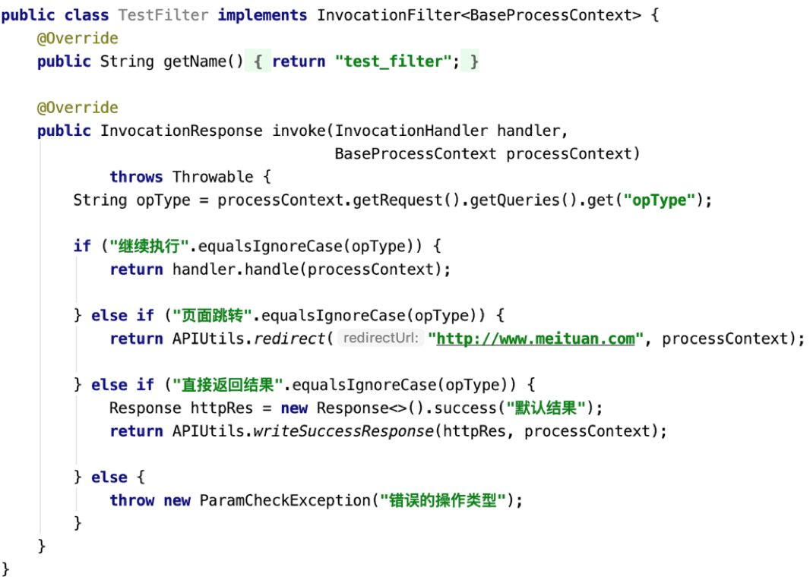
目前Shepherd通过自定义组件已经成功支持了美团优选、外卖、餐饮、打车等重要业务，接入的自定义组件数量有200多个。
2.4.2 服务编排
一般情况下，网关上配置的一个API对应后端一个RPC或者HTTP服务。如果调用端有聚合和编排后端服务的需求，那么有多少后端服务，就必须发起多少次HTTP的请求调用。由此就会带来一些问题，调用端的HTTP请求次数过多，效率低，在调用端聚合服务的逻辑过重。
服务编排的需求应运而生，服务编排是对既有服务进行编排调用，同时对获取的数据进行处理。主要应用在数据聚合场景：一次HTTP请求返回的数据需要调用多个或多次服务（RPC或HTTP）才能获取到完整的结果。
经过前期调研，公司已经有一套成熟的服务编排框架，由客服团队开发的海盗组件（参见**《海盗中间件：美团服务体验平台对接业务数据的最佳实践》**一文），也是美团内部的公共服务。
因此我们与海盗团队合作，设计了Shepherd的服务编排支持方案。海盗通过独立部署的方式提供服务编排能力，Shepherd与海盗之间通过RPC进行调用。这样可以解耦Shepherd与海盗，避免因服务编排能力影响集群上的其他服务，同时多一次RPC调用并不会有明显耗时增加。使用上对业务研发人员也是透明的，非常方便，业务研发人员在管理端配置好服务编排的API，通过配置中心同时下发到Shepherd服务端和海盗服务上，即可开始使用服务编排能力。整体的交互架构图如下：
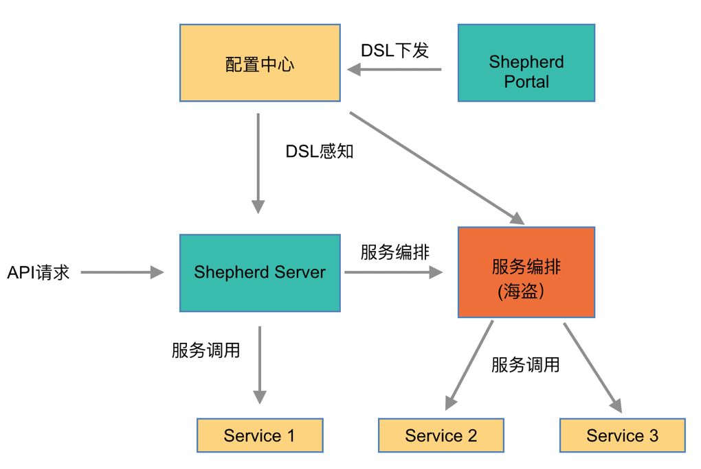
三、未来规划
目前接入Shepherd API网关的API数量超过18000多个，线上运行的集群数量90多个，日均总调用次数在百亿以上。随着Shepherd API网关业务规模的不断增长，对我们的可用性、易用性、可扩展性必将提出更高的要求。未来一年，Shepherd的规划重点包括有云原生架构演进、静态网站托管、组件市场等。
3.1 云原生架构演进
Shepherd API网关的云原生架构演进有三个目标：简化接入网关步骤，提升业务研发人员的研发效率；减小服务端War包大小，提升安全性和稳定性；接入Serverless弹性，降低成本，提高资源利用率。
为了实现这个三个目标，我们计划整体迁移网关服务到公司的Serverless服务Nest（参见**《美团Serverless平台Nest的探索与实践》**一文）上，同时通过抽取Shepherd核心功能到SDK的方式集成到业务的网关集群，业务研发人员可以只选择自己需要使用的自定义组件，从而大幅减小服务端的War包大小。
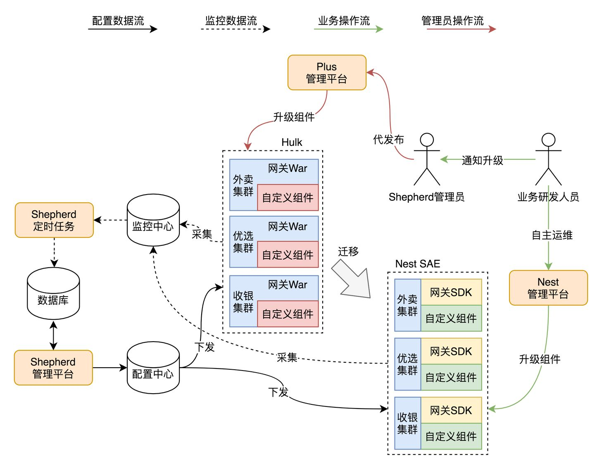
3.2 静态网站托管
依托Shepherd API网关实现静态网站托管的目标是：建设通用的静态网站托管解决方案，为开发者提供便捷、稳定、高扩展性的静态网站托管服务。
静态网站托管解决方案能为业务研发人员提供的主要功能包括：托管静态网站资源，包括存储及访问；管理应用生命周期，包括自定义域配置以及身份验证和授权；CI/CD集成等。
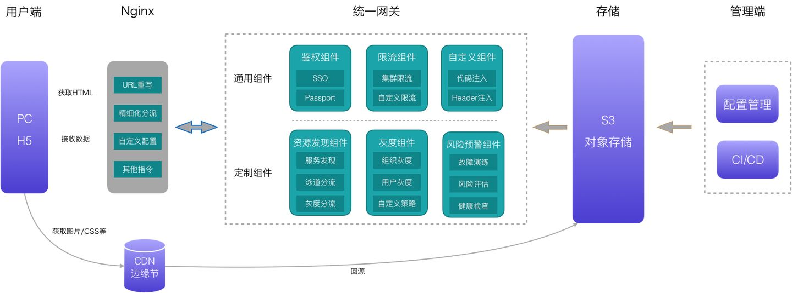
3.3 组件市场
Shepherd API网关组件市场的目标是：合作共赢，形成开发生态，业务研发人员可将开发的自定义组件提供给其他有需要的业务研发团队使用。
我们希望让业务研发人员参与到自定义组件的开发，完善使用文档后设置为公共组件，开放给所有使用Shepherd的业务研发人员使用，避免重复造轮子。